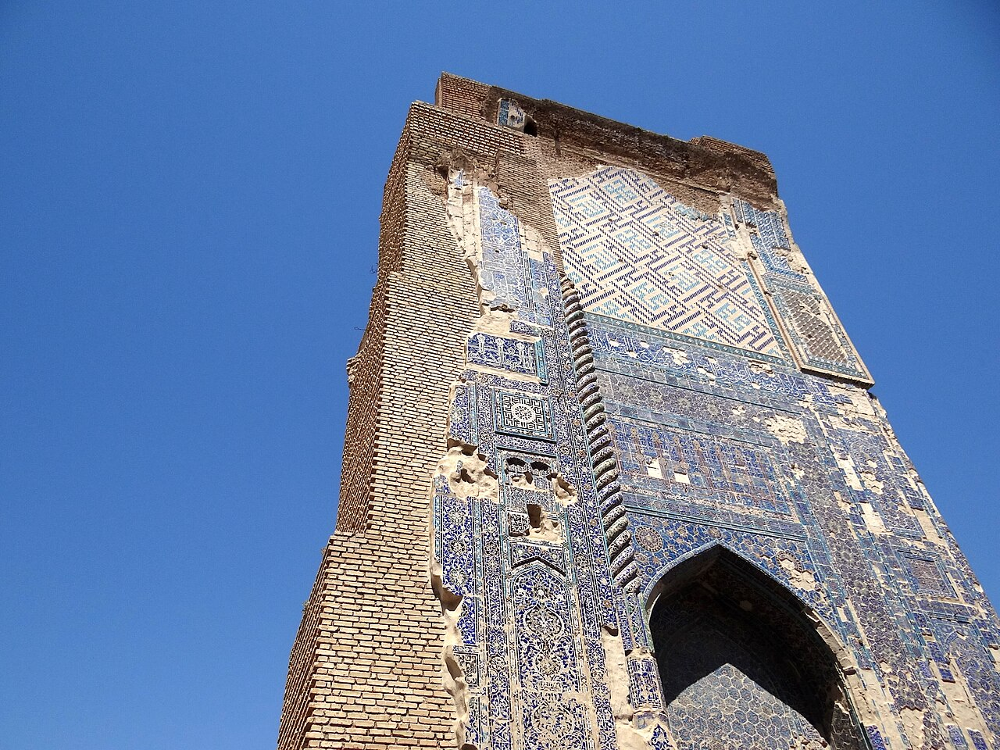

Markaziy Osiyo arablari: Oʻzbekistondagi eng qadimgi, deyarli yoʻqolib ketgan jamoa
Markaziy Osiyo arablari — Movarounnahrga arab istilosidan boshlab, VII–XVII asrlar davomida bir necha toʻlqinda koʻchib kelib oʻrnashgan etnik arablar jamoasi. Ular Samarqand, Buxoro, Qashqadaryo va Surxondaryo (hozirgi Oʻzbekiston) hamda Xatlon (Tojikiston) hududlarida yashagan. Jamoaning umumiy soni hozir 10 mingdan oshmaydi; Oʻzbekistonda 1989-yilgi aholi roʻyxatida 2 800 (boshqa maʼlumotga koʻra 12 880) kishi, Tojikistonda 2010-yilgi roʻyxatda 4 mingdan ortiq kishi qayd etilgan. Ularning tili — Markaziy Osiyo arab tili — yoʻqolish arafasida. Koʻpchilik asta-sekin oʻzbek va tojik aholisiga singib ketgan. Ilmiy manbalar asosida.

Oʻzbekiston aholisi orasida asrlar davomida yashab kelgan, biroq bugun deyarli unutilgan bir jamoa bor — Markaziy Osiyo arablari. Ularning tarixi mintaqaga Islom kirib kelishi bilan boshlanadi va bugungi kunga kelib deyarli toʻliq assimilyatsiya bilan yakunlanmoqda. Quyida ushbu jamoaning tarixi faqat tasdiqlangan faktlar asosida bayon etiladi.
Kelib chiqishi: arab istilosidan XVII asrgacha
Arablar Markaziy Osiyoga bir toʻlqinda emas, VII–XVII asrlar oraligʻida bir necha toʻlqinda koʻchib kelgan. Birinchi toʻlqin VII–VIII asrlarda — arab-musulmon qoʻshinlari Movarounnahrni fath etgan davrga toʻgʻri keladi; shu davrda Buxoro va Samarqand atrofida yirik harbiy garnizonlar joylashtirilgan. Keyinroq Balx va Andxoy (hozirgi Afgʻoniston) tomonidan boshqa arab guruhlari ham qoʻshilgan.
Qayerda yashagan
Markaziy Osiyo arablari asosan hozirgi Oʻzbekistonning Samarqand, Buxoro, Qashqadaryo va Surxondaryo viloyatlarida, Tojikistonning Xatlon viloyatida, shuningdek Turkmanistonda (Turkmanobod va Danew atroflarida) qishloqlar boʻlib oʻrnashgan. Koʻpincha ular alohida qishloqlarda yashab, uzoq vaqt oʻz anʼanalarini saqlab kelgan.

Soni: 10 mingdan oshmaydi
Bugungi kunda Markaziy Osiyoda ildiz otgan arablarning umumiy soni 10 mingdan oshmaydi. Oʻzbekistonda 1989-yilgi aholi roʻyxatida 2 800 kishi arab deb qayd etilgan (baʼzi manbalarda oʻsha roʻyxat uchun 12 880 raqami ham keltiriladi). Tojikistonda 2010-yilgi roʻyxatda 4 mingdan ortiq arab hisobga olingan. Bu raqamlar aholining juda kichik ulushini tashkil etadi.
Tili: Markaziy Osiyo arab tili
Jamoaning ona tili — Markaziy Osiyo arab tili, u klassik va zamonaviy adabiy arab tilidan sezilarli farq qiladi. Oʻzbekistonda uning kamida ikki shevasi mavjud: Buxoro shevasi (tojik tili taʼsirida) va Qashqadaryo shevasi (turkiy tillar taʼsirida). Mintaqadagi arab shevalari bir-biriga har doim ham tushunarli emas, shu bois soʻzlovchilar koʻpincha oʻzaro muloqotda mahalliy tillar yoki rus tilidan foydalangan.
Assimilyatsiya va yoʻqolish arafasidagi til
XX asr davomida koʻpchilik arablar oʻzbek va tojik aholisiga singib ketdi; koʻplari sovet aholi roʻyxatlarida oʻzlarini oʻzbek deb yozdirgan, bu esa ularning haqiqiy soni kam koʻrsatilishiga olib keldi. Yosh avlod kundalik hayotda oʻzbek yoki tojik tiliga toʻliq oʻtgani sari Markaziy Osiyo arab tili soʻzlovchilari kamayib bormoqda va til bugun yoʻqolish arafasida turibdi.
Nega bu tarix muhim
Markaziy Osiyo arablari tarixi Oʻzbekiston aholisining necha asrlar davomida qanchalik rang-barang boʻlib kelganini koʻrsatadi: turkiy, forsiy va arab ildizlari bir hududda yonma-yon yashagan. Bu jamoaning deyarli toʻliq singib ketishi — mintaqa etnik xaritasining qanday oʻzgarib borishiga yana bir misol; uning tili va anʼanalari esa bugun olimlar tomonidan hujjatlashtirilib, saqlab qolinmoqda.